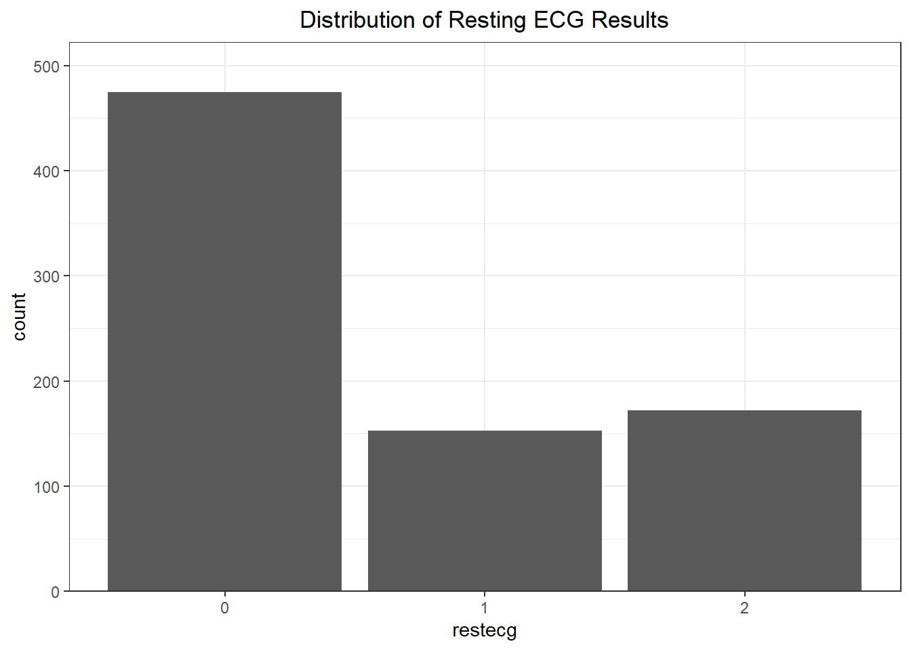
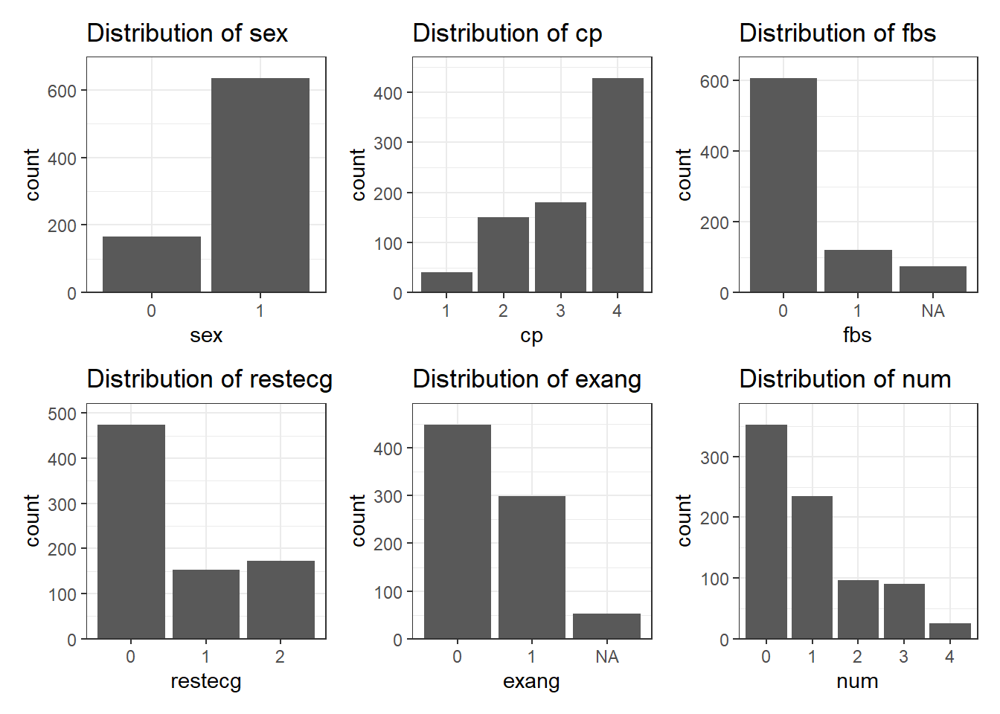
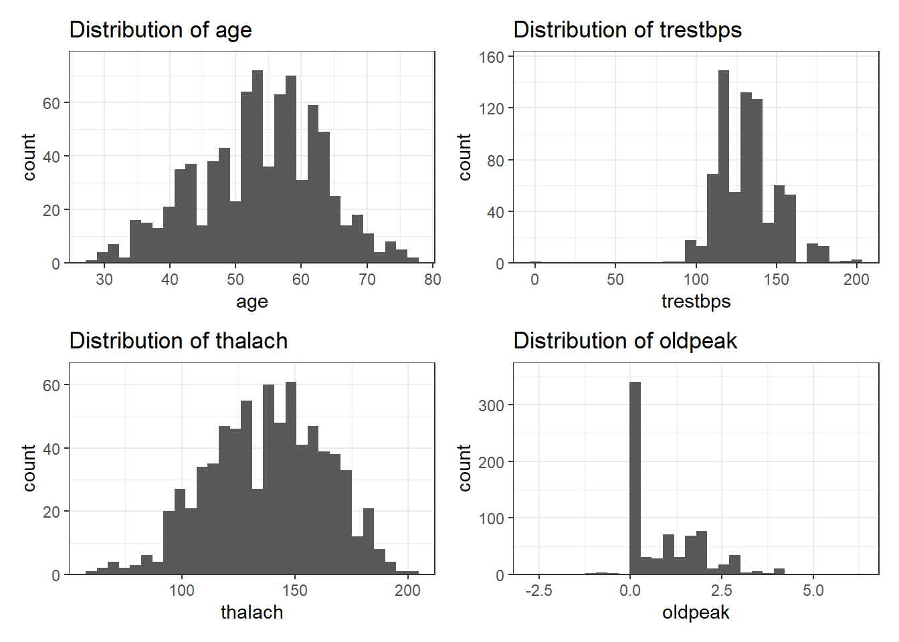
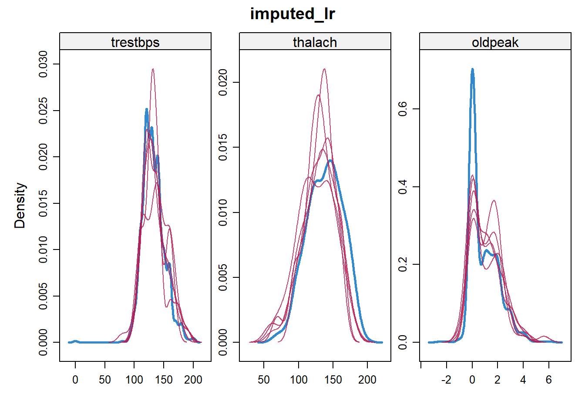
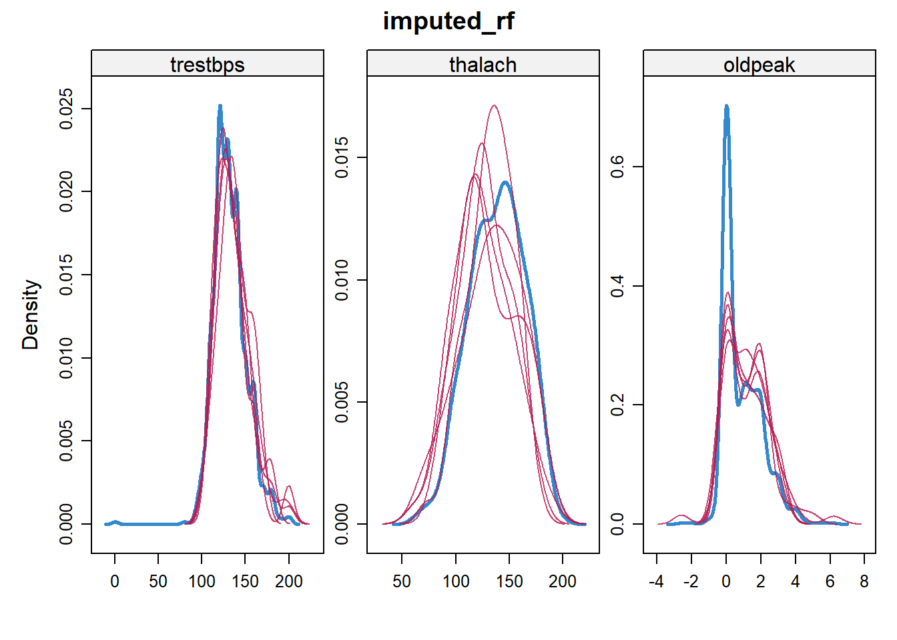
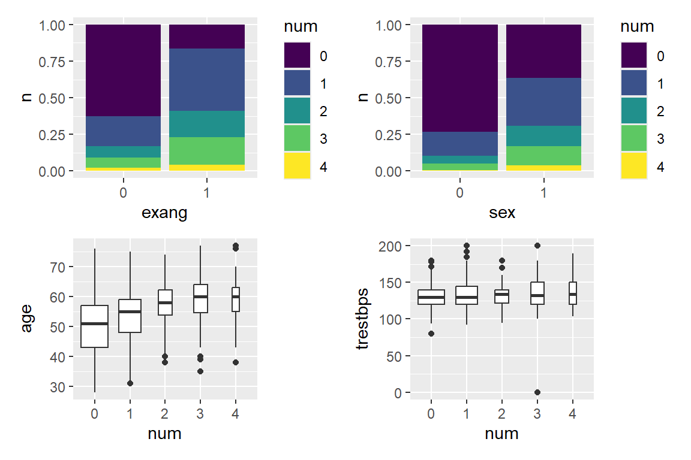

| Variables | datatypes | feature/target | explanation | Missing Value (in%) |
|---|---|---|---|---|
| ca | numeric | feature | Number of major vessels (0-3) colored by flourosopy | 66% |
| thal | numeric | feature | Thalassemia (3 = normal; 6 = fixed defect; 7 = reversable defect) | 53% |
| slope | ordered, factor | feature | The slope of the peak exercise ST segment | 34% |
| fbs | factor | feature | Fasting blood sugar > 120 mg/dl (1 = true; 0 = false) | 10% |
| oldpeak | numeric | feature | ST depression induced by exercise relative to rest | 7% |
| trestbps | numeric | feature | Resting blood pressure (in mm Hg on admission) | 6% |
| thalach | numeric | feature | Maximum heart rate achieved | 6% |
| exang | factor | feature | Exercise induced angina (1 = yes; 0 = no) | 6% |
| chol | numeric | feature | Serum cholestoral in mg/dl | 3% |
| age | numeric | feature | Age in years | 0% |
| sex | factor | feature | Sex (1 = male; 0 = female) | 0% |
| cp | factor | feature | Chest pain type (1: typical, 2: atypical, 3: non-anginal, 4: asymptomatic) | 0% |
| restecg | factor | feature | Resting electrocardiographic results | 0% |
| num | ordered, factor | target | Diagnosis of heart disease (angiographic disease status) | 0% |
Heart_failure
1 Building a Prediction Model for Coronary Artery Disease
1.1 Abstract
Methodology: This study uses the UCI Heart Disease repository to develop a predictive framework for Coronary Artery Disease (CAD). Python 3.14 was used for data preparation and R 4.5.2for the analysis. Partial Proportional Odds (PPO) model was used to respect ordinal disease severity (Classes 0–4) after variables failed the parallel lines assumption. Missing values were addressed via MICE with specialized logistic regressions, and coefficients were pooled using Rubin’s Rules. A Bayesian-inspired weighting strategy was applied to minimize systemic bias and prioritize clinical safety over raw accuracy.
Results: The binary model demonstrated clinical viability with an accuracy of 56% and a balanced accuracy of 84.2% . While the unweighted model achieved a sensitivity of 85% and specificity of 83%, the multinomial version struggled with rare severity stages (Classes 2 and 4). The weighting strategy achieved a 51.5% (from 0.33 to 0.17) reduction in systemic bias, successfully trading absolute success rate for the higher sensitivity required in diagnostic screening.
1.2 Introduction:
Coronary Artery Disease (CAD) remains the leading cause of global mortality, accounting for an estimated 17.8 million deaths annually. Epidemiological trends indicate a shifting burden; while mortality rates have stabilized in high-income countries due to advanced interventions, the prevalence of CAD is surging in developing regions and among younger populations. This “epidemiological transition” presents a critical challenge: the sheer volume of patients at risk is outpacing the availability of specialized diagnostic resources, such as coronary angiography.
Traditional clinical risk scores often struggle with the non-linear complexity of biological data. Machine Learning models have been tuned for accuracy and have extended to include the nuanced and unpredictable nature of medicine. By using the famous data sets, the UCI Cleveland Heart Disease repository, we developed an ML model that can identify patterns hard to check with standard diagnostic methods. Many traditional models collapse the target variable into a binary. In contrary, we respected the ordinal nature of our target variable to consider the nuances. Since three of our variables (age, sex, and exercise-induced angina) couldn’t meet parallel line assumptions, Partial Proportional Odds (PPO) was preferred in the model. The model achieved a binary accuracy of 85% (Healthy vs Sick) and a mean predictive difference of 0.59, showing the model errors tend to fall to the most correct value. While the UCI Heart Disease data is the benchmark in the application of machine learning in healthcare, we believe this report sheds light on a predictive framework to provide actionable diagnostic foresight to clinicians.
1.3 Methods
The infamous UCI Heart Disease data, usually considered a benchmark for applying data science in healthcare, was used for the analysis. The four databases are Cleveland, Switzerland, VA, and Hungarian data sets. These data sets were pooled and merged using Python 3.
1.3.1 Presented Variables:
The merged csv data had 14 variables (13 features and 1 target variable)
1.3.2 Data Cleaning
After skimming for the soundness of the values in our data, we converted our features from characters to their intended types of variables: Nominal, Ordinal, and Numerical. NA value representation was then handled according to the dataset description ( -9 and ?). We also assumed “0” as missing data in cholesterol.
Four variables,
- thalassemia type
- number of major blood vessels as seen by coronary angiography, an expensive process that can be difficult to apply to every patient.
- Slope of the peak exercise ST segment
- Cholesterol – there is an unbalanced lack of data in “Switzerland.data”.
These variables were excluded due to the significant amount of missing data they contained.
120 observations for the test set and 800 observations for the training set were then selected randomly.
1.3.3 Handling Missing Values.
For restecg (Resting ECG), missing values were negligible (0.2%), so we imputed the mode 0.

The other feature variables undergo MICE (Multivariate Imputation Chain Equation) after we checked for a sensibly balanced distribution of all our remaining categorical and numerical features using plots, and confirmed that we can use all remaining columns.
Categorical Variables

Numerical Variables

We did two MICE imputations: one using PMM - Predictive Mean Matching and Random Forests when fitting, and the other using PMM and specialized Logistic Regressions: Logistic regression (for binary), POLR (for ordinal features), and POLYREG (for categorical features).
We compared two imputation methods using:
- Density plot: to check similarity in the distribution of our five imputations,
- Strip plots: to test if it gives a valid output.
- Trace plots: to analyze the difference in mean and standard deviation for each loopXX.
- Selected columns: we take the difference between the real value and the imputed value for two selected columns.
And we chose the MICE model which uses specialized logistic regressions.


1.3.4 Building a Regression Model
While we planned to use a proportional odds logistic regression model (POLR), three of our feature variables, age, sex and exang, failed to meet the Brant test for the Parallel Lines Assumption to proceed with POLR.
| X2 | df | probability | |
|---|---|---|---|
| Omnibus | 79.9423104 | 36 | 0.00 |
| age | 6.5843225 | 3 | 0.09 |
| sex1 | 2.7320300 | 3 | 0.43 |
| cp2 | 0.3413144 | 3 | 0.95 |
| cp3 | 0.8620800 | 3 | 0.83 |
| cp4 | 1.4067443 | 3 | 0.70 |
| trestbps | 2.6273437 | 3 | 0.45 |
| fbs1 | 1.9471604 | 3 | 0.58 |
| restecg1 | 3.5628397 | 3 | 0.31 |
| restecg2 | 7.0017508 | 3 | 0.07 |
| thalach | 5.3177306 | 3 | 0.15 |
| exang1 | 14.2963833 | 3 | 0.00 |
| oldpeak | 4.1961999 | 3 | 0.24 |
The plots …

Therefore, we chose the Partial Proportional Logistic regression model. This model doesn’t assume for homoscedacity or Parallel assumption tests, and is one of the most flexible regression models. However, feature variables that fit many of the statistical assumptions yield better accuracy than their counterparts.
We build our model by fitting all our imputed datasets. We also used Rubin’s Rule to pool our test model and check if our model is not just random noise using the total variance and the Z-score
(Intercept):1 (Intercept):2 (Intercept):3 (Intercept):4 age:1
1.093778948 3.980227324 4.085424440 3.344427211 -2.425581054
age:2 age:3 age:4 sex1 cp2
-4.678326843 -3.335065648 -1.282744966 -5.385122343 2.442607369
cp3 cp4 trestbps fbs1 restecg1:1
0.128781368 -2.836136622 0.357001993 -1.935239808 -1.155086961
restecg1:2 restecg1:3 restecg1:4 restecg2:1 restecg2:2
-3.098745954 -2.087068948 -0.973779131 0.093265018 -1.893010113
restecg2:3 restecg2:4 thalach exang1:1 exang1:2
-2.764923900 -2.354069551 3.590211333 -4.024988280 0.005065197
exang1:3 exang1:4 oldpeak
0.015017842 0.852190139 -6.891312462 | Parameters | Total Variance | degree of freedom | Margin of Error |
|---|---|---|---|
| (Intercept):1 | 1.2982422 | 171 | 2.2491089 |
| (Intercept):2 | 1.3717221 | 202 | 2.3093563 |
| (Intercept):3 | 1.6631494 | 167 | 2.5460820 |
| (Intercept):4 | 3.5240047 | 468 | 3.6888494 |
| age:1 | 0.0001217 | 681 | 0.0216648 |
| age:2 | 0.0001450 | 732 | 0.0236375 |
| age:3 | 0.0002120 | 686 | 0.0285881 |
| age:4 | 0.0007335 | 771 | 0.0531645 |
| sex1 | 0.0477894 | 762 | 0.4291450 |
| cp2 | 0.1731850 | 723 | 0.8170165 |
| cp3 | 0.1396490 | 502 | 0.7342016 |
| cp4 | 0.1280772 | 514 | 0.7030850 |
| trestbps | 0.0000162 | 611 | 0.0079084 |
| fbs1 | 0.0384195 | 711 | 0.3848253 |
| restecg1:1 | 0.0653273 | 757 | 0.5017535 |
| restecg1:2 | 0.0564539 | 730 | 0.4664616 |
| restecg1:3 | 0.0777318 | 666 | 0.5474413 |
| restecg1:4 | 0.2986341 | 760 | 1.0727783 |
| restecg2:1 | 0.0539111 | 771 | 0.4557951 |
| restecg2:2 | 0.0564092 | 753 | 0.4662532 |
| restecg2:3 | 0.0761729 | 725 | 0.5418435 |
| restecg2:4 | 0.2528393 | 762 | 0.9870990 |
| thalach | 0.0000144 | 86 | 0.0075362 |
| exang1:1 | 0.0491118 | 245 | 0.4365076 |
| exang1:2 | 0.0441734 | 483 | 0.4129697 |
| exang1:3 | 0.0682185 | 137 | 0.5164788 |
| exang1:4 | 0.2073441 | 232 | 0.8971507 |
| oldpeak | 0.0060177 | 135 | 0.1534168 |
1.3.5 Tools
Python 3.14 was used for primary data preparation, and R 4.5.2 was used for the analysis.
1.4 Results
Our unweighted model achieved a binary success rate of 83%. Moreover, our model has an absolute success rate of 62.5%. Considering the mean absolute error is 0.6, our model is providing a valuable prediction. However, our data is under predicting. Medicine is known for its inherent nature of caution.
| Sensitivity | Specificity | Pos Pred Value | Neg Pred Value | Precision | Recall | F1 | Prevalence | Detection Rate | Detection Prevalence | Balanced Accuracy | |
|---|---|---|---|---|---|---|---|---|---|---|---|
| Class: 0 | 0.80 | 0.88 | 0.88 | 0.79 | 0.88 | 0.80 | 0.84 | 0.53 | 0.42 | 0.48 | 0.84 |
| Class: 1 | 0.45 | 0.87 | 0.67 | 0.73 | 0.67 | 0.45 | 0.54 | 0.37 | 0.17 | 0.25 | 0.66 |
| Class: 2 | 0.25 | 0.90 | 0.08 | 0.97 | 0.08 | 0.25 | 0.12 | 0.03 | 0.01 | 0.11 | 0.57 |
| Class: 3 | 0.25 | 0.88 | 0.12 | 0.94 | 0.12 | 0.25 | 0.17 | 0.07 | 0.02 | 0.13 | 0.56 |
| Class: 4 | NA | 0.98 | NA | NA | 0.00 | NA | NA | 0.00 | 0.00 | 0.03 | NA |
| Sensitivity | Specificity | Pos Pred Value | Neg Pred Value | Precision | Recall | F1 | Prevalence | Detection Rate | Detection Prevalence | Balanced Accuracy |
|---|---|---|---|---|---|---|---|---|---|---|
| 0.8 | 0.88 | 0.88 | 0.79 | 0.88 | 0.8 | 0.84 | 0.53 | 0.42 | 0.48 | 0.84 |
We applied a Bayesian-method-inspired weighting strategy. By considering the cost of missing a diagnosis and the prevalence of rare cases, we aligned our model closer to clinical safety. By applying a cube-root inverse prevalence factor, we achieved a 49% reduction in systemic bias (from -0.33 to -0.17) and a binary accuracy rate of 84.2%, while this resulted in an 8% decrease in the absolute success rate. This trade-off enhances our model’s sensitivity.
| Sensitivity | Specificity | Pos Pred Value | Neg Pred Value | Precision | Recall | F1 | Prevalence | Detection Rate | Detection Prevalence | Balanced Accuracy | |
|---|---|---|---|---|---|---|---|---|---|---|---|
| Class: 0 | 0.83 | 0.85 | 0.84 | 0.84 | 0.84 | 0.83 | 0.84 | 0.49 | 0.41 | 0.48 | 0.84 |
| Class: 1 | 0.38 | 0.81 | 0.50 | 0.73 | 0.50 | 0.38 | 0.43 | 0.32 | 0.12 | 0.25 | 0.60 |
| Class: 2 | 0.10 | 0.89 | 0.08 | 0.92 | 0.08 | 0.10 | 0.09 | 0.08 | 0.01 | 0.11 | 0.50 |
| Class: 3 | 0.18 | 0.87 | 0.12 | 0.91 | 0.12 | 0.18 | 0.15 | 0.09 | 0.02 | 0.13 | 0.53 |
| Class: 4 | 0.00 | 0.97 | 0.00 | 0.99 | 0.00 | 0.00 | NaN | 0.01 | 0.00 | 0.03 | 0.49 |
| Sensitivity | Specificity | Pos Pred Value | Neg Pred Value | Precision | Recall | F1 | Prevalence | Detection Rate | Detection Prevalence | Balanced Accuracy |
|---|---|---|---|---|---|---|---|---|---|---|
| 0.83 | 0.85 | 0.84 | 0.84 | 0.84 | 0.83 | 0.84 | 0.49 | 0.41 | 0.48 | 0.84 |
1.5 Discussion
This results show us that our model was poor at detecting Class 2 and Class 4 because we had too limited observations for our model to generalize the pattern.
The results of this study shows the inherent challenge of predicting disease severity in imbalanced medical datasets. While the model demonstrated high proficiency in binary classification, performance significantly declined when identifying specific severity stages. Specifically, the model struggled to detect Class 2 and Class 4 cases. This is primarily attributed to the limited number of observations for these categories in the test set, which restricted the model’s ability to generalize patterns for end-stage CAD.
These findings suggest that Partial Proportional Odds (PPO) modeling provides a flexible and statistically sound framework for CAD screening, particularly when standard assumptions like parallel lines are violated. Future refinements should focus on larger, multi-center datasets to bolster the representation of rare severity classes and further enhance the model’s predictive foresight.